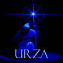
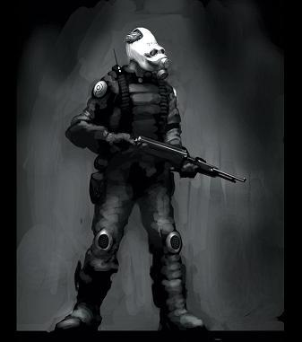

Forums galactiques > Assemblée Galactique : diplomatie officielle > Les Loups de Mibu recrutent !
Pages : 1
| Urza Respect diplomatique : 0  12/09 ETU 12:51 | Score : 0 Détails Les Loups de Mibu sont des gouverneurs démocratiques s'opposant aux menaces extérieurs par la Diplomatie et ensuite, si besoin, les Armes. Les Loups de Mibu sont extrèmements attaché aux valeurs de la démoncratie et à toutes ses libertées.
Toute les candidatures sont acceptées à condition d'une participation active et durable à la comunauté des Loups de Mibu. Les 4 premiers à me contacter Ingame devientront Commandants. En espérant vous voire bientot parmi nous, Cordialement, Urza | ||
| kenuo Respect diplomatique : -14  12/09 ETU 15:06 | Score : 0 Détails Je voudrez en savoir plus, vos informations ne sont pas sufisantes
cordialement kenuo | ||
| Necrid Respect diplomatique : 26  12/09 ETU 22:33 | Score : 0 Détails Qui êtes-vous Commandant ? Veuillez avoir l'obligeance de présenter votre Coalition à l'Assemblée.
| ||
| rik mortel Respect diplomatique : 0  14/09 ETU 12:46 | Score : 0 Détails et s'est une coalition ca? si oui pourer vous me l'envoiyer en message.
| ||
| Kyr'hn Respect diplomatique : 5  30/03 ETU 07:39 | Score : 0 Détails *Le commandant Kyr'hn se leva et prit alors la parole*
En effet, il serait judicieux de présenter votre coalition car si quelques personnes doivent s'y rattacher ,c'est non pas pour être commandant, car ils sont arrivés les premiers, mais parce qu'ils adèrent à vos ideaux ! *Kyr'hn se rassit et attendit la suite ...* | ||
| Empire Kilrathi Respect diplomatique : 63  30/03 ETU 10:20  | Score : 2 Détails *explosion de rire*
Cette coalition est morte il y a quelque chose comme... 7 mois... Je crois que vous avez quelque peu louppé le coche... | ||
| darksith Respect diplomatique : 170  30/03 ETU 10:30 | Score : 2 Détails Commandants,
Je vous demande de ne pas faire attention aux sujets que notre très apprécié Aigle Blanc remonte du fin fond des archives... Car c'est ce qu'il souhaite, il veut faire revivre des sujets qui n'ont plus lieu d'être. A la limite, votez négatif sur son post et tenez-vous en à cela... Comme ça les sujets redescendront d'eux-même... Commandant darksith, Hydropathe et fier de l'être. |
Pages : 1
Forums galactiques > Assemblée Galactique : diplomatie officielle > Les Loups de Mibu recrutent !